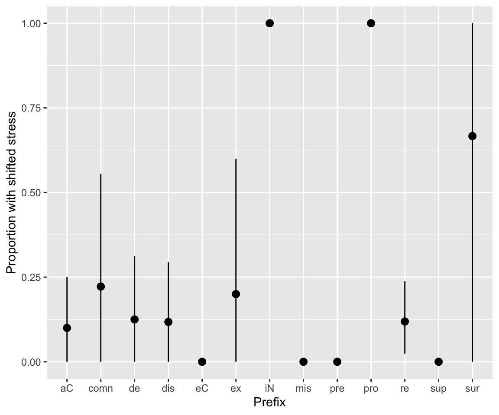
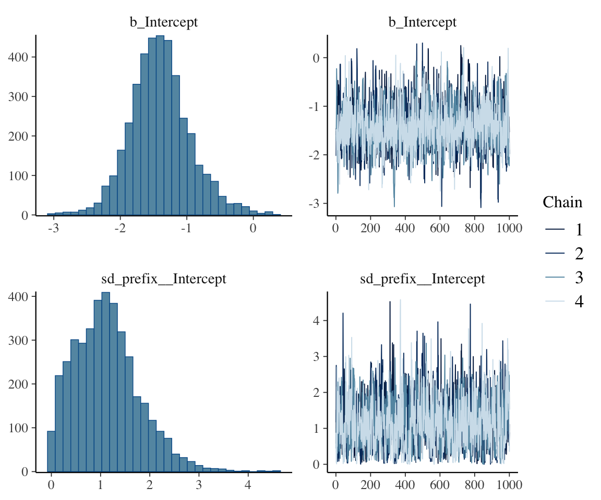
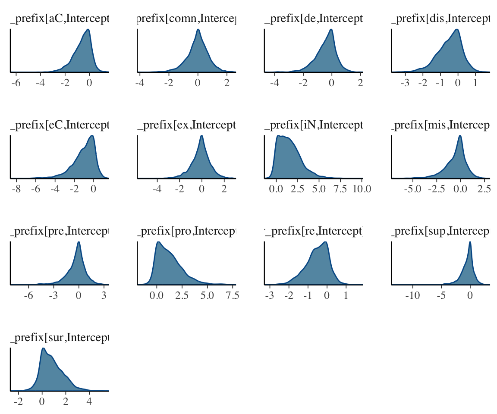
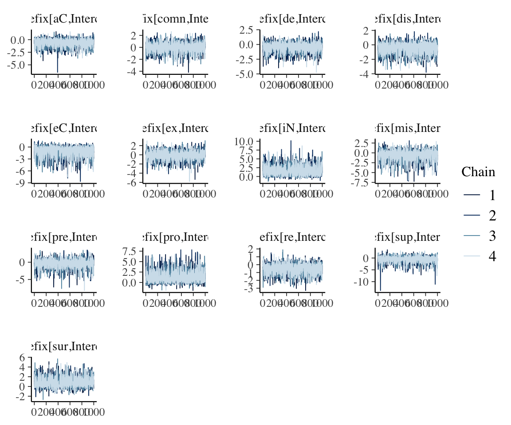
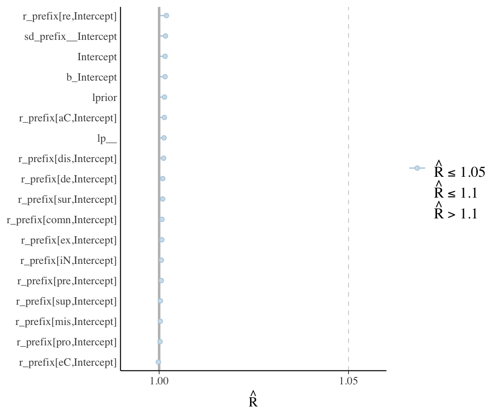
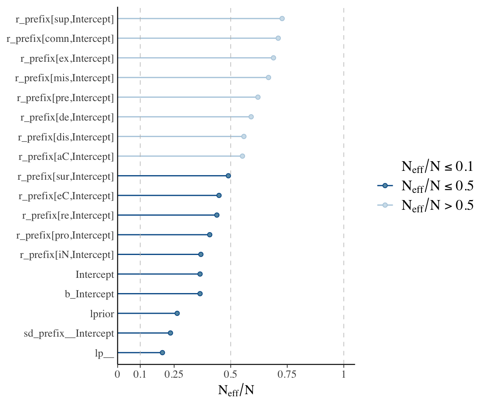
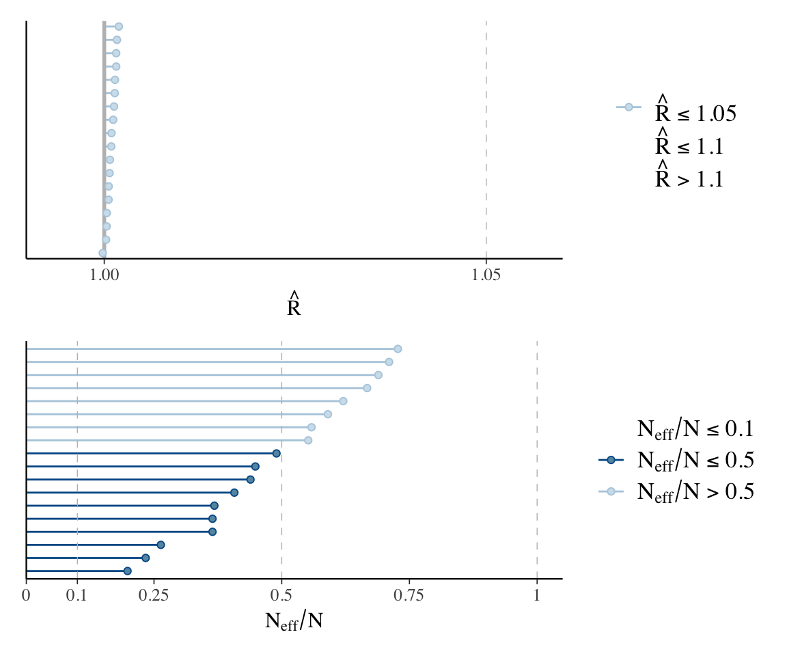
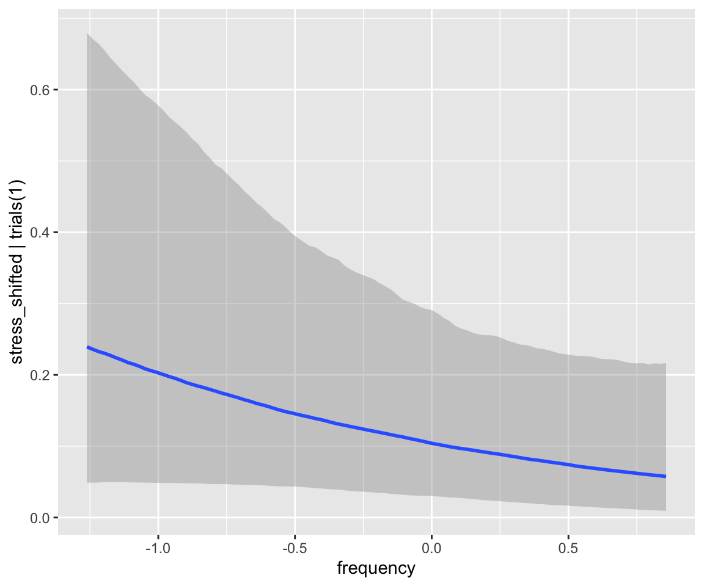
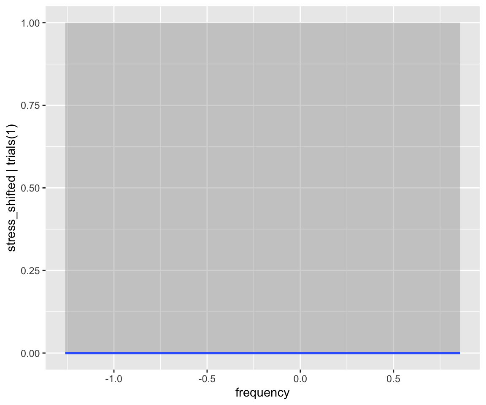

library(brms)
library(lme4)
library(arm)
library(tidyverse)
library(tidybayes)
library(bayestestR)
library(bayesplot)
library(loo)
library(broom) ## for tidy model summaries
library(broom.mixed) ## for tidy model summaries for lme4 models
library(patchwork)5 Bayesian Hierarchical Models 1
These lecture notes cover topics from:
Topics:
- First Bayesian Hierarchical Models
- Random intercepts
- Fixed-effect predictors
- Model interpretation: start
- Model comparison
- Plotting effects
5.1 Preliminaries
Load libraries we will need:
Practical notes
If you have loaded
rethinking, you need to detach it before using brms. See Kurz (2023) Sec. 4.3.1.I use the
fileargument when fittingbrmsmodels to make compiling this document easier (so the models don’t refit every time I compile). You may or may not want to do this for your own models. Seefileandfile_refitarguments in?brm.Here I set the
file_refitoption so “brms will refit the model if model, data or algorithm as passed to Stan differ from what is stored in the file.”
options(brms.file_refit = "on_change")- I use
chains = 4, cores = 4when fittingbrmmodels below—this means 4 chains, each to be run on one core on my laptop.cores = 4may need to be adjusted for your computer. (You may have fewer or more cores; I have 8 cores, so this leaves 50% free.) You should figure out how to use multiple cores on your machine. Starting today, we are fitting complex-enough models that this matters.
5.1.1 Data
Load the diatones dataset and perform some data cleaning and recoding (see Section 1.1, Section 3.1.1):
diatones <- read.csv("https://osf.io/tqjm8/download", stringsAsFactors = TRUE)
# make numeric versions of all categorical predictors, while saving original versions
diatones <- diatones %>% mutate(
syll1_coda_orig = syll1_coda,
syll2_coda_orig = syll2_coda,
syll2_td_orig = syll2_td,
## turns no/yes -> 0/1
syll1_coda = ifelse(syll1_coda == "no", 0, 1),
## turns '0'/'C'/'CC'/'CCC' -> 0/1/2/3
syll2_coda = str_count(syll2_coda_orig, "C"),
syll2_td = ifelse(syll2_td == "no", 0, 1)
)
## standardize all predictors using arm::rescale
diatones <- diatones %>% mutate(
syll1_coda = rescale(syll1_coda_orig),
syll2_td = rescale(syll2_td_orig),
syll2_coda = rescale(syll2_coda),
frequency = rescale(frequency)
)5.2 A first mixed-effects model: random intercepts
McElreath makes a compelling case, similar to Gelman and Hill (2007), for using “varying intercept”, “varying slope”, etc., instead of “random intercept”, etc. I will nonetheless use random intercept/slope terminology, at least at first, to make the connections with (frequentist) mixed-effects models clearer.
For the diatones data, words (individual observations) with the same prefix (column prefix) may not be independent, and it is reasonable to consider models with a by-prefix random intercept. (See discussion in RMLD Sec. 9.2.) To illustrate, here is an empirical plot showing the proportion of words with shifted stress by prefix:
Code
diatones %>% ggplot(aes(x = prefix, y = stress_shifted)) +
stat_summary(fun.data = "mean_cl_boot") +
labs(x = "Prefix", y = "Proportion with shifted stress")
## Warning: Removed 1 row containing missing values or values outside the scale range
## (`geom_segment()`).
Note that the prefixes with average 0 or 1 have a small number of observations, but (except for “pre”) not just 1:
diatones %>% count(prefix)
## prefix n
## 1 aC 20
## 2 comn 9
## 3 de 16
## 4 dis 17
## 5 eC 8
## 6 ex 5
## 7 iN 3
## 8 mis 2
## 9 pre 1
## 10 pro 2
## 11 re 42
## 12 sup 2
## 13 sur 3The simplest possible frequentist mixed-effects model in this case would be this logistic regression:
diatones_freq_m81 <- glmer(
stress_shifted ~ 1 + (1 | prefix),
data = diatones,
family = "binomial"
)
## Warning in checkConv(attr(opt, "derivs"), opt$par, ctrl = control$checkConv, :
## Model failed to converge with max|grad| = 0.0236227 (tol = 0.002, component 1)Model summary:
tidy(diatones_freq_m81)
## # A tibble: 2 × 7
## effect group term estimate std.error statistic p.value
## <chr> <chr> <chr> <dbl> <dbl> <dbl> <dbl>
## 1 fixed <NA> (Intercept) -1.49 0.00298 -501. 0
## 2 ran_pars prefix sd__(Intercept) 1.08 NA NA NAMore verbose:
summary(diatones_freq_m81)
## Generalized linear mixed model fit by maximum likelihood (Laplace
## Approximation) [glmerMod]
## Family: binomial ( logit )
## Formula: stress_shifted ~ 1 + (1 | prefix)
## Data: diatones
##
## AIC BIC logLik deviance df.resid
## 117.6 123.3 -56.8 113.6 128
##
## Scaled residuals:
## Min 1Q Median 3Q Max
## -0.7845 -0.3961 -0.3826 -0.3708 2.6967
##
## Random effects:
## Groups Name Variance Std.Dev.
## prefix (Intercept) 1.176 1.084
## Number of obs: 130, groups: prefix, 13
##
## Fixed effects:
## Estimate Std. Error z value Pr(>|z|)
## (Intercept) -1.493044 0.002983 -500.5 <2e-16 ***
## ---
## Signif. codes: 0 '***' 0.001 '**' 0.01 '*' 0.05 '.' 0.1 ' ' 1
## optimizer (Nelder_Mead) convergence code: 0 (OK)
## Model failed to converge with max|grad| = 0.0236227 (tol = 0.002, component 1)The fitted parameters are:
- \(\beta_0\) : overall intercept (log-odds of shifting stress)
- \(\sigma_{p}\): SD of the by-prefix random intercept
We can also extract the random intercept for each prefix (its offset from \(\beta_0\), in log-odds):
ranef(diatones_freq_m81)$prefix
## (Intercept)
## aC -0.49104599
## comn 0.15400282
## de -0.31000610
## dis -0.35914303
## eC -0.83525861
## ex 0.05129309
## iN 1.63689589
## mis -0.32766047
## pre -0.18499887
## pro 1.29292642
## re -0.42822641
## sup -0.32766047
## sur 1.00763985Some notes:
- There is a convergence issue.
- This can be easily solved by changing the optimizer, but it’s typical of
glmer()that even this very simple model doesn’t fit correctly with default settings.
- There is an estimate \(\hat{\sigma}_{p}\), but no SE.
- There are estimates of the random effects, but no SEs.
We could add SEs for 2-3 (see RMLD Sec. TODO), but this is not the default, for good reasons—extra computation time, approximations which may not always be appropriate.
All of these issues are solved for free in a Bayesian model!1
To fit the ayesian version, we just need priors on \(\beta_0\) and \(\sigma_{p}\). Let’s use the same weakly informative priors as McElreath (2020) Sec. 13.2.1. The probability model for \(y_i\) (column stress_shifted) is then:
where \(i=1, \ldots n\), the number of observations, and \(j = 1 \ldots, n_{prefix}\), the number of prefixes.
These are weakly-informative priors for \(\beta_0\) and \(\sigma\).2
Fit this model in brms:
## so you get the same 'random' result
set.seed(5)
diatones_m81 <- brm(
data = diatones,
family = binomial,
stress_shifted | trials(1) ~ 1 + (1 | prefix),
prior = c(
prior(normal(0, 1.5), class = Intercept), ## beta_0
prior(exponential(1), class = sd) ## sigma
),
iter = 2000, warmup = 1000, chains = 4, cores = 4,
file = "models/diatones_m81.brm"
)
## Only 2 levels detected so that family 'bernoulli' might be a more efficient choice.
## Only 2 levels detected so that family 'bernoulli' might be a more efficient choice.(Note the notation for the random intercept is the same as glmer().)
Model summary:
diatones_m81
## Family: binomial
## Links: mu = logit
## Formula: stress_shifted | trials(1) ~ 1 + (1 | prefix)
## Data: diatones (Number of observations: 130)
## Draws: 4 chains, each with iter = 2000; warmup = 1000; thin = 1;
## total post-warmup draws = 4000
##
## Multilevel Hyperparameters:
## ~prefix (Number of levels: 13)
## Estimate Est.Error l-95% CI u-95% CI Rhat Bulk_ESS Tail_ESS
## sd(Intercept) 1.13 0.66 0.08 2.61 1.00 935 1412
##
## Regression Coefficients:
## Estimate Est.Error l-95% CI u-95% CI Rhat Bulk_ESS Tail_ESS
## Intercept -1.40 0.45 -2.25 -0.41 1.00 1458 1736
##
## Draws were sampled using sampling(NUTS). For each parameter, Bulk_ESS
## and Tail_ESS are effective sample size measures, and Rhat is the potential
## scale reduction factor on split chains (at convergence, Rhat = 1).Examine trace plots/posterior:
plot(diatones_m81)
These look OK, though we might wonder whether the \(\sigma\) posterior needs more iterations. Running the model for twice as long (left as an exercise) gives a similar-looking posterior, so we’ll stick with this model.
\(\hat{R}\) and ESS for the parameters shown look satisfactory.
The model summary shows the parameters \(\beta_0\) and \(\sigma\), whose estimates and 95% CIs are similar (but not identical) to the frequentist model (diatones_freq_m81):
summary(diatones_m81)
## Family: binomial
## Links: mu = logit
## Formula: stress_shifted | trials(1) ~ 1 + (1 | prefix)
## Data: diatones (Number of observations: 130)
## Draws: 4 chains, each with iter = 2000; warmup = 1000; thin = 1;
## total post-warmup draws = 4000
##
## Multilevel Hyperparameters:
## ~prefix (Number of levels: 13)
## Estimate Est.Error l-95% CI u-95% CI Rhat Bulk_ESS Tail_ESS
## sd(Intercept) 1.13 0.66 0.08 2.61 1.00 935 1412
##
## Regression Coefficients:
## Estimate Est.Error l-95% CI u-95% CI Rhat Bulk_ESS Tail_ESS
## Intercept -1.40 0.45 -2.25 -0.41 1.00 1458 1736
##
## Draws were sampled using sampling(NUTS). For each parameter, Bulk_ESS
## and Tail_ESS are effective sample size measures, and Rhat is the potential
## scale reduction factor on split chains (at convergence, Rhat = 1).The model also fits each \(\alpha_j\), the random intercepts, but these are not shown by default.
### list variables in the model
variables(diatones_m81)
## [1] "b_Intercept" "sd_prefix__Intercept"
## [3] "Intercept" "r_prefix[aC,Intercept]"
## [5] "r_prefix[comn,Intercept]" "r_prefix[de,Intercept]"
## [7] "r_prefix[dis,Intercept]" "r_prefix[eC,Intercept]"
## [9] "r_prefix[ex,Intercept]" "r_prefix[iN,Intercept]"
## [11] "r_prefix[mis,Intercept]" "r_prefix[pre,Intercept]"
## [13] "r_prefix[pro,Intercept]" "r_prefix[re,Intercept]"
## [15] "r_prefix[sup,Intercept]" "r_prefix[sur,Intercept]"
## [17] "lprior" "lp__"These also have posteriors, 95% CIs, trace plots, Rhat values, and so on:
### posterior summary for *all* parameters, with 95% CIs:
posterior_summary(diatones_m81)
## Estimate Est.Error Q2.5 Q97.5
## b_Intercept -1.3992381 0.4547829 -2.24559522 -0.4074337
## sd_prefix__Intercept 1.1252789 0.6643871 0.08220781 2.6101612
## Intercept -1.3992381 0.4547829 -2.24559522 -0.4074337
## r_prefix[aC,Intercept] -0.6072764 0.7253027 -2.29208968 0.5082547
## r_prefix[comn,Intercept] -0.0227525 0.7372341 -1.67179589 1.3967454
## r_prefix[de,Intercept] -0.4273092 0.7174684 -2.05782585 0.8149659
## r_prefix[dis,Intercept] -0.4820494 0.7081390 -2.11648816 0.6998360
## r_prefix[eC,Intercept] -1.0446985 1.1742041 -3.93323094 0.5604813
## r_prefix[ex,Intercept] -0.1219485 0.8701621 -2.05991353 1.5294766
## r_prefix[iN,Intercept] 1.5638417 1.3224835 -0.19889598 4.6590338
## r_prefix[mis,Intercept] -0.5337148 1.1617605 -3.45925037 1.2941277
## r_prefix[pre,Intercept] -0.3174477 1.1580880 -3.14138694 1.6713924
## r_prefix[pro,Intercept] 1.2681752 1.2762139 -0.36068743 4.3544651
## r_prefix[re,Intercept] -0.5189332 0.6055688 -1.84715869 0.4890578
## r_prefix[sup,Intercept] -0.5119821 1.1756984 -3.36394599 1.3591041
## r_prefix[sur,Intercept] 0.8458484 0.9662156 -0.65081485 3.0776287
## lprior -2.9307143 0.6756104 -4.48891174 -1.9313278
## lp__ -74.2178808 4.2487196 -83.57989256 -67.2042423
### show just random effect posteriors using
## regex to choose just parameters starting with
## r_
post_ranef <- as_draws_df(diatones_m81, regex = "^r_")
### posterior densities
mcmc_dens(post_ranef, regex = "^r_")
### trace plot
mcmc_trace(post_ranef, regex = "^r_")
## for all parameters in the model:
## Rhat plot
mcmc_plot(diatones_m81, type = "rhat") +
## adds parameter names on y-axis
yaxis_text(hjust = 1)
## N_eff plot
mcmc_plot(diatones_m81, type = "neff") + yaxis_text(hjust = 1)
#neff_ratio(diatones_m81) %>% mcmc_neff(size = 2, regex = "^r_") + yaxis_text(hjust = 1)



These plots, together with posterior + trace plots above, suggest our model is decent:
- \(\hat{R}\) always very near 1
- No posteriors look bizarre – all at least roughly unimodal, smooth.
- Trace plots look fine.
- (And: Sampling not very inefficient for any parameter.)
In this model there is only one random-effect term, with few levels. In a more realistic model there are hundreds or thousands of random effect terms. Typically it is infeasible to actually examine posterior plots, etc., for all terms, so we rely on diagnostics like checking if any parameter has \(\hat{R}>>1\).
We’d do this with plots like the following:
Code
p1 <- mcmc_plot(diatones_m81, type = "rhat")
p2 <- mcmc_plot(diatones_m81, type = "neff")
p1 / p2
Note that the posteriors for individual random effects look different from what we’re used to—many don’t look normal, and several look highly skewed. This is fine, and in fact makes sense: there is no reason these parameters need to have normal posterior distributions, and it is expected that some posteriors will be skewed, which is an effect of “partial pooling”.
Exercise 5.1 This code gets draws from the posterior of the predicted log-odds of shifted_stress for words with prefix de, as column pred_logit:
diatones_m81 %>%
spread_draws(`r_prefix[de,Intercept]`, b_Intercept) %>%
mutate(pred_logit = `r_prefix[de,Intercept]` + b_Intercept)
## # A tibble: 4,000 × 6
## .chain .iteration .draw `r_prefix[de,Intercept]` b_Intercept pred_logit
## <int> <int> <int> <dbl> <dbl> <dbl>
## 1 1 1 1 -0.129 -1.46 -1.59
## 2 1 2 2 -0.749 -1.59 -2.34
## 3 1 3 3 0.0717 -1.49 -1.42
## 4 1 4 4 -0.528 -1.31 -1.84
## 5 1 5 5 0.380 -1.18 -0.800
## 6 1 6 6 -0.590 -1.77 -2.36
## 7 1 7 7 -3.71 -1.00 -4.72
## 8 1 8 8 -0.353 -0.800 -1.15
## 9 1 9 9 -1.14 -0.909 -2.05
## 10 1 10 10 -0.385 -1.12 -1.50
## # ℹ 3,990 more rowsExplain how this works: what two parameters are added to make up
pred_logit?Use these draws to plot the posterior of the probability of
shifted_stressfor words with prefix de.Extra: Make a similar plot, with one panel per prefix. That is, first each facet/panel should show the posterior of the probability of
shifted_stressfor words with a different prefix (levels ofprefix). (Hint: read more abouttidybayesnotation.)
5.3 Complexifying and interpreting the model
Let’s now fit a realistic model of the diatones data, including predictors—this is the frequentist model from RMLD Sec. 9.2.1. There are now several `fixed-effect’ predictors.
For priors we will use:
- Intercept: \(N(0,5)\)
- same as the
diatones_m41model from Section 3.4.1.
- same as the
- Each \(\beta_i\): \(N(0,3)\):
- same
- Random intercept variance: \(\text{Exponential}(1)\), as above.
Here we are using essentially “flat” priors, just to keep things simpler for the moment (we don’t have to decide on “weakly informative” values).
diatones_m82 <- brm(
data = diatones,
stress_shifted | trials(1) ~ syll2_coda + syll2_td + frequency + syll1_coda + syll2_td:frequency + syll1_coda:frequency + (1 | prefix),
family = binomial,
prior = c(
prior(normal(0, 5), class = Intercept), # beta_0
prior(normal(0, 3), class = b), # beta_i
prior(exponential(1), class = sd) # sigma
),
iter = 2000, warmup = 1000, chains = 4, cores = 4,
file = "models/diatones_m82.brm"
)
## Only 2 levels detected so that family 'bernoulli' might be a more efficient choice.
## Only 2 levels detected so that family 'bernoulli' might be a more efficient choice.Model summary:
diatones_m82
## Warning: There were 1 divergent transitions after warmup. Increasing
## adapt_delta above 0.8 may help. See
## http://mc-stan.org/misc/warnings.html#divergent-transitions-after-warmup
## Family: binomial
## Links: mu = logit
## Formula: stress_shifted | trials(1) ~ syll2_coda + syll2_td + frequency + syll1_coda + syll2_td:frequency + syll1_coda:frequency + (1 | prefix)
## Data: diatones (Number of observations: 130)
## Draws: 4 chains, each with iter = 2000; warmup = 1000; thin = 1;
## total post-warmup draws = 4000
##
## Multilevel Hyperparameters:
## ~prefix (Number of levels: 13)
## Estimate Est.Error l-95% CI u-95% CI Rhat Bulk_ESS Tail_ESS
## sd(Intercept) 1.39 0.86 0.07 3.32 1.00 724 1142
##
## Regression Coefficients:
## Estimate Est.Error l-95% CI u-95% CI Rhat Bulk_ESS
## Intercept -2.16 0.62 -3.47 -0.89 1.00 1426
## syll2_coda -1.73 0.75 -3.29 -0.32 1.00 3104
## syll2_td 1.48 0.71 0.12 2.91 1.00 2630
## frequency -0.80 0.60 -2.05 0.34 1.00 2917
## syll1_coda 1.99 0.98 0.16 4.14 1.00 1724
## syll2_td:frequency 2.43 1.17 0.28 4.90 1.00 3225
## frequency:syll1_coda 3.21 1.51 0.27 6.25 1.00 3333
## Tail_ESS
## Intercept 1101
## syll2_coda 2850
## syll2_td 2922
## frequency 2574
## syll1_coda 2329
## syll2_td:frequency 2610
## frequency:syll1_coda 2839
##
## Draws were sampled using sampling(NUTS). For each parameter, Bulk_ESS
## and Tail_ESS are effective sample size measures, and Rhat is the potential
## scale reduction factor on split chains (at convergence, Rhat = 1).Exercise 5.2 Examine some diagnostics for this model, just for the parameters shown by summary(). Do you see any sign that the model hasn’t “converged” (good posterior sample for all parameters)? If so, re-fit the model with more iterations.
Solution:
Code
## yes, you need more iterations
diatones_m82 <- brm(
data = diatones,
stress_shifted | trials(1) ~ syll2_coda + syll2_td + frequency + syll1_coda + syll2_td:frequency + syll1_coda:frequency + (1 | prefix),
family = binomial,
prior = c(
prior(normal(0, 5), class = Intercept), # beta_0
prior(normal(0, 3), class = b), # beta_i
prior(exponential(1), class = sd) # sigma
),
iter = 5000, warmup = 2500, chains = 4, cores = 4,
file = "models/diatones_m82.brm"
)
## Only 2 levels detected so that family 'bernoulli' might be a more efficient choice.
## Only 2 levels detected so that family 'bernoulli' might be a more efficient choice.Code
summary(diatones_m82)
## (We'll return to the "divergent transitions" message below.)5.3.1 Model comparison
We can ask whether adding the random intercept term is justified by comparing to a model without this term, using PSIS (“LOO”), from Section 4.2 :
diatones_m83 <- brm(
data = diatones,
stress_shifted | trials(1) ~ syll2_coda + syll2_td + frequency + syll1_coda + syll2_td:frequency + syll1_coda:frequency,
family = binomial,
prior = c(
prior(normal(0, 5), class = Intercept), # beta_0
prior(normal(0, 3), class = b) # beta_i
),
iter = 2000, warmup = 1000, chains = 4, cores = 4,
file = "models/diatones_m83.brm"
)diatones_m82 <- add_criterion(diatones_m82, c("loo"))
diatones_m83 <- add_criterion(diatones_m83, c("loo"))
loo_compare(diatones_m82, diatones_m83)
## elpd_diff se_diff
## diatones_m82 0.0 0.0
## diatones_m83 -1.7 2.2Depending on the model selection criterion we use—lowest PSIS, versus lowest PSIS up to 95% CredI—either model could be preferred. (See the end of Section 4.2 for discussion.)
5.3.2 Plotting effects
As for non-hierarchical models (Section 3.3.1, Section 3.2.2), there are various ways to plot effects:
- Making your own plots (using
predict()orfitted()from brms) or using pre-existing functions. - Confidence intervals vs. prediction intervals
For example: plot the marginal effect of frequency, averaging over other predictors, with 95% CIs:
conditional_effects(diatones_m82, effects = "frequency")
Predictions here are “fitted vlaues”: the expected value of the probability of stress shifting for an “average prefix”. These are on the probability scale; to get predictions on the log-odds scale, you’d need to use posterior_linpred(). You can alternatively get PIs from the posterior predictive distribution, which will give a larger interval.
This won’t do something sensible for the current example:
conditional_effects(diatones_m82, effects = "frequency", method = "posterior_predict")
(An exercise next week will be to try this for a linear regression model)
We discussed fitted values vs. model predictions in Section 3.2.2.
Exercise 5.3
- Make plots visualizing the
syll1:frequencyandsyll2_td:frequencyinteractions, like RMLD Fig. 9.4. (It’s OK if your figures don’t treatsyll1_codaandsyll2_tdas factors,or maybe you can figure out how to do this.)3
- Extra: You should have found that the plot looks similar to the plot for the frequentist model. Let’s use the Bayesian model to make a prediction plot that would be much harder, if possible at all, using the frequentist model: the frequency effect just for words with prefix =
iN.
- Make a dataframe of new values to predict at:
prefix=iNsyll2_coda=syll2_td=0 (held at average values)syll1_coda=-0.22 (recall:syll1_codais a prefix-level predictor; this is its value for prefixiN)- Let
frequencyrange between -1.5 and 1.5 (meaning +-3 SD offrequencybefore it was standarized).
- Use
fitted()to get predictions with 95% CIs. - Plot these predictions, to make a plot like the one above with
frequencyon the \(x\)-axis.4 - You should find that the plot looks different from the
frequencyplot above, both in terms of its mean and the width of the CI. Why is this?5
5.4 Extra
Model diatones_m82 has some divergent transitions:
diatones_m82
## Warning: There were 1 divergent transitions after warmup. Increasing
## adapt_delta above 0.8 may help. See
## http://mc-stan.org/misc/warnings.html#divergent-transitions-after-warmup
## Family: binomial
## Links: mu = logit
## Formula: stress_shifted | trials(1) ~ syll2_coda + syll2_td + frequency + syll1_coda + syll2_td:frequency + syll1_coda:frequency + (1 | prefix)
## Data: diatones (Number of observations: 130)
## Draws: 4 chains, each with iter = 2000; warmup = 1000; thin = 1;
## total post-warmup draws = 4000
##
## Multilevel Hyperparameters:
## ~prefix (Number of levels: 13)
## Estimate Est.Error l-95% CI u-95% CI Rhat Bulk_ESS Tail_ESS
## sd(Intercept) 1.39 0.86 0.07 3.32 1.00 724 1142
##
## Regression Coefficients:
## Estimate Est.Error l-95% CI u-95% CI Rhat Bulk_ESS
## Intercept -2.16 0.62 -3.47 -0.89 1.00 1426
## syll2_coda -1.73 0.75 -3.29 -0.32 1.00 3104
## syll2_td 1.48 0.71 0.12 2.91 1.00 2630
## frequency -0.80 0.60 -2.05 0.34 1.00 2917
## syll1_coda 1.99 0.98 0.16 4.14 1.00 1724
## syll2_td:frequency 2.43 1.17 0.28 4.90 1.00 3225
## frequency:syll1_coda 3.21 1.51 0.27 6.25 1.00 3333
## Tail_ESS
## Intercept 1101
## syll2_coda 2850
## syll2_td 2922
## frequency 2574
## syll1_coda 2329
## syll2_td:frequency 2610
## frequency:syll1_coda 2839
##
## Draws were sampled using sampling(NUTS). For each parameter, Bulk_ESS
## and Tail_ESS are effective sample size measures, and Rhat is the potential
## scale reduction factor on split chains (at convergence, Rhat = 1).(You may have a different number of divergent transitions, as expected given that each MCMC fit is different.)
In general this is not a problem to be ignored, as it indicates poor sampling of the posterior. However, a very small number of divergent transitions can be fine (e.g. 2 out of 10000). Nonetheless, let’s take care of this by increasing adapt_delta, as suggested:
diatones_m83_2 <- update(diatones_m82,control=list(adapt_delta=0.9))
diatones_m83_2Now there is no warning.
You can check that the resulting model is very similar to diatones_m82, but in general models before and after fixing divergent transitions issues can be very different.
Note that adapt_delta must be smaller than 1. The brms default is 0.8, while McElreath’s default (in rethinking::ulam) is 0.95. (These are just defaults, one isn’t better than the other.)
With the important caveat that “convergence” may just mean “result more influenced by the prior”, in cases where
glmer()is less likely to converge.↩︎\(\beta_0\) has most probability mass in log-odds of -4 to 4 = 0.02-0.98 probability. See the end of Kurz (2023) Sec. 13.1 for a plot of the \(\sigma\) prior.↩︎
Hint: examples in
?conditional_effects.↩︎Hint: Kurz 13.5.1↩︎
Hint: examine the posterior for
iN’s random effect, and look how common this prefix is.↩︎